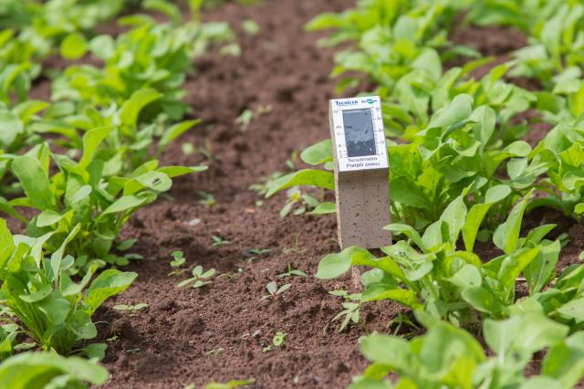
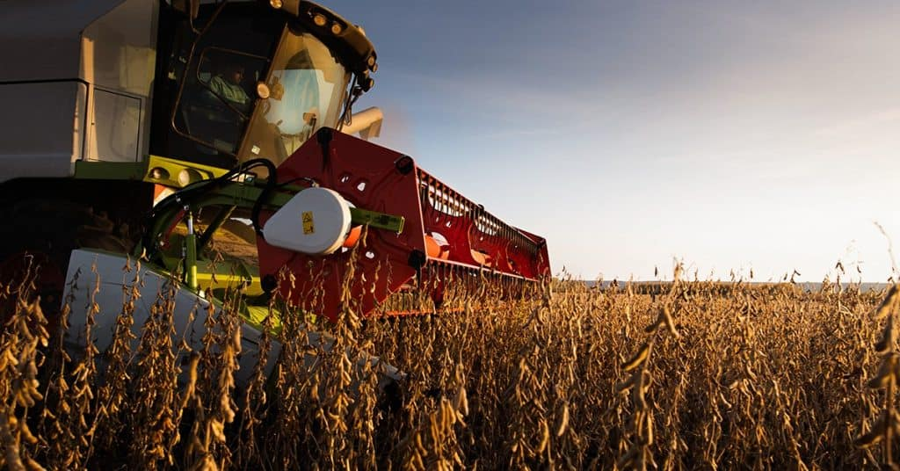

A soja é uma das culturas mais importantes para o Brasil, representando uma grande parcela da economia agrícola. O Brasil é o maior exportador mundial desse grão, que tem diversas finalidades, desde alimentação humana até ração animal, além da produção de óleo de soja.
Graças às condições climáticas favoráveis e a avanços tecnológicos no setor agrícola, o país tem mantido sua posição de liderança no mercado mundial de soja. A plantação de soja é distribuída principalmente nas regiões Centro-Oeste, Sul e Sudeste, com destaque para os estados de Mato Grosso, Paraná e Rio Grande do Sul.
Plantação de soja no Brasil.
O ciclo de produção da soja envolve etapas que começam com a preparação do solo, plantio, manejo durante o crescimento e, finalmente, a colheita. O uso de tecnologias avançadas tem ajudado os produtores a otimizar suas operações e aumentar a produtividade.
Equipamentos de Precisão no Manejo da Soja
A agricultura de precisão tem sido um fator chave para o sucesso do cultivo de soja no Brasil. Ela permite que os produtores utilizem tecnologias avançadas para melhorar a gestão das plantações, resultando em maior produtividade e uso mais eficiente dos recursos.
GPS Agrícola
O GPS agrícola é essencial para o mapeamento de terrenos e a automação de máquinas. Ele permite traçar rotas precisas para plantio, pulverização e colheita. Com o GPS, as máquinas operam em trajetórias otimizadas, evitando sobreposições e reduzindo o uso de insumos.
Uso de GPS em máquinas agrícolas.
Sensores de Solo
Sensores de solo monitoram em tempo real a umidade, temperatura e níveis de nutrientes. Isso permite o ajuste imediato de irrigação e aplicação de fertilizantes, garantindo o uso eficiente da água e recursos, além de otimizar o crescimento das culturas.

Sensores de solo usados no manejo da soja.
Máquinas com Taxa Variável
Essas máquinas ajustam automaticamente a quantidade de sementes, fertilizantes ou defensivos aplicados em diferentes áreas da lavoura. Baseadas em dados georreferenciados e sensores, garantem que cada porção do campo receba exatamente o necessário, evitando desperdícios.

Máquinas agrícolas com taxa variável.
Drones
Drones monitoram o desenvolvimento das plantações, identificam pragas e doenças e realizam levantamentos topográficos. Eles podem aplicar defensivos agrícolas de forma precisa em áreas específicas, otimizando a cobertura e reduzindo o impacto ambiental.
Drone utilizado no monitoramento da plantação de soja.